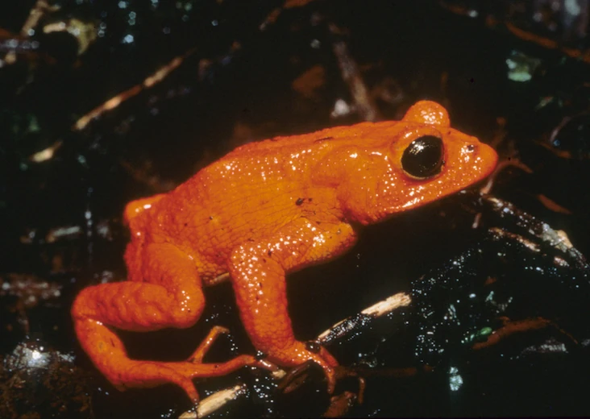

library(tidyverse)
library(rstatix)
# These packages will be used for evaluating the models we fit to our simulated data
library(performance)
library(ggResidpanel)
# This package is optional/will only be used for later sections in this chapter
library(MASS)5 Predictor and response variables
This chapter shows how to simulate a variable from a distribution that is conditional on other variables: in other words, how to simulate a response variable in a linear model containing one or more predictors.
5.1 Libraries and functions
Click to expand
import numpy as np
import pandas as pd
import matplotlib.pyplot as plt
import statsmodels.api as sm
import statsmodels.formula.api as smf
from patsy import dmatrix5.2 Golden toads
For the examples in the materials shown here, we’re going to simulate a dataset about golden toads, an extinct species of amphibians. We’ll simulate various predictor variables, and their relationship to the clutch size (number of eggs) produced by a given toad.

{kind=link}
5.2.1 Continuous predictors
We’ll start with continuous predictors, because these are a little easier than categorical ones, and simulate a dataset suitable for simple linear regression.
Set seed and sample size
First, we set a seed and a sample size:
set.seed(20)
# sample size
n <- 60np.random.seed(25)
# sample size
n = 60Generate values of predictor variable
The next step is to generate our predictor variable.
There’s no noise or uncertainty in our predictor (remember that residuals are always in the y direction, not the x direction), so we can just produce the values by sampling from a distribution of our choice.
One of the things that can cause variation in clutch size is the size of the toad herself, so we’ll use that as our continuous predictor. This sort of biological variable would probably be normally distributed, so we’ll use rnorm to generate it.
Google tells us that the average female golden toad was somewhere in the region of 42-56mm long, so we’ll use that as a sensible basis for our normal distribution for our predictor variable length.
length <- rnorm(n, 48, 3)length = np.random.normal(48, 3, n)Simulate average values of response variable
Now, we need to simulate our response variable, clutchsize.
We’re going to do this by setting up the linear model. We’ll specify a y-intercept for clutchsize, plus a gradient that captures how much clutchsize changes as length changes.
b0 <- 175
b1 <- 2
sdi <- 20b0 = 175
b1 = 2
sdi = 20We’ve also added an sdi parameter. This captures the standard deviation around the model predictions that is due to other factors we’re not measuring. In other words, this will determine the size of our residuals.
Now, we can simulate our set of predicted values for clutchsize.
avg_clutch <- b0 + b1*lengthavg_clutch = b0 + b1*lengthYou’ll notice we’ve just written out the equation of our model.
tibble(length, avg_clutch) %>%
ggplot(aes(x = length, y = avg_clutch)) +
geom_point()
We use the tibble function to combine our response and predictor variables together into a single dataset.
tempdata = pd.DataFrame({'length': length, 'avg_clutch': avg_clutch})
tempdata.plot.scatter(x = 'length', y = 'avg_clutch')
plt.show()
We use the pd.DataFrame function to stitch our arrays together into a single dataframe object with multiple columns.
When we visualise length and avg_clutch together, you see they perfectly form a straight line. That’s because avg_clutch doesn’t contain the residuals - that comes next.
Simulate actual values of response variable
The final step is to simulate the actual values of clutch size.
We’ll use rnorm function again, and we put avg_clutch in as our mean. This is because the set of actual clutch size values should be normally distributed around our set of predictions.
clutchsize <- rnorm(n, avg_clutch, sdi)
goldentoad <- tibble(clutchsize, length)clutchsize = np.random.normal(avg_clutch, sdi, n)
goldentoad = pd.DataFrame({'length': length, 'clutchsize': clutchsize})Checking the dataset
Let’s make sure our dataset is behaving the way we intended.
First, we’ll visualise it:
ggplot(goldentoad, aes(x = length, y = clutchsize)) +
geom_point()
goldentoad.plot.scatter(x = 'length', y = 'clutchsize')
plt.show()
And then, we’ll construct a linear model - and check that our beta coefficients have been replicated to a sensible level of precision!
lm_golden <- lm(clutchsize ~ length, goldentoad)
summary(lm_golden)
Call:
lm(formula = clutchsize ~ length, data = goldentoad)
Residuals:
Min 1Q Median 3Q Max
-33.718 -10.973 1.094 11.941 41.690
Coefficients:
Estimate Std. Error t value Pr(>|t|)
(Intercept) 267.1395 38.4922 6.940 3.7e-09 ***
length 0.1065 0.8038 0.132 0.895
---
Signif. codes: 0 '***' 0.001 '**' 0.01 '*' 0.05 '.' 0.1 ' ' 1
Residual standard error: 18.76 on 58 degrees of freedom
Multiple R-squared: 0.0003025, Adjusted R-squared: -0.01693
F-statistic: 0.01755 on 1 and 58 DF, p-value: 0.8951model = smf.ols(formula= "clutchsize ~ length", data = goldentoad)
lm_golden = model.fit()
print(lm_golden.summary()) OLS Regression Results
==============================================================================
Dep. Variable: clutchsize R-squared: 0.184
Model: OLS Adj. R-squared: 0.170
Method: Least Squares F-statistic: 13.07
Date: Tue, 03 Jun 2025 Prob (F-statistic): 0.000630
Time: 13:59:53 Log-Likelihood: -256.33
No. Observations: 60 AIC: 516.7
Df Residuals: 58 BIC: 520.8
Df Model: 1
Covariance Type: nonrobust
==============================================================================
coef std err t P>|t| [0.025 0.975]
------------------------------------------------------------------------------
Intercept 157.5257 30.614 5.146 0.000 96.245 218.806
length 2.2928 0.634 3.615 0.001 1.023 3.562
==============================================================================
Omnibus: 0.516 Durbin-Watson: 2.307
Prob(Omnibus): 0.773 Jarque-Bera (JB): 0.492
Skew: -0.207 Prob(JB): 0.782
Kurtosis: 2.839 Cond. No. 649.
==============================================================================
Notes:
[1] Standard Errors assume that the covariance matrix of the errors is correctly specified.Not bad at all. The linear model has managed to extract beta coefficients similar to the original b0 and b1 that we set.
If you’re looking to explore and understand this further, try exploring the following things in your simulation, and see how they affect the p-value and the precision of the beta estimates:
- Varying the sample size
- Varying the
sdi - Varying the
b1parameter
5.2.2 Categorical predictors
Categorical predictors are a tiny bit more complex to simulate, as the beta coefficients switch from being constants (gradients) to vectors (representing multiple means).
Let’s imagine that golden toads living in different ponds produce slightly different clutch sizes, and simulate some sensible data on that basis.
You might find it helpful to delete variables/clear the global environment, so that nothing from your previous simulation has an unexpected impact on your new one:
rm(list=ls())del(avg_clutch, clutchsize, goldentoad, length, lm_golden, model, tempdata)(This step is optional!)
Parameters and predictor variable
Then, we’ll set up the parameters and predictor variables:
set.seed(20)
n <- 60
b0 <- 175
b1 <- 2
b2 <- c(0, 30, -10)
sdi <- 20
length <- rnorm(n, 48, 3)
pond <- rep(c("A", "B", "C"), each = n/3)
rep and c functions
The rep and c functions in R (c short for concatenate) will come up quite a lot when generating predictor variables.
The rep function takes two arguments each time:
- First, an argument containing the thing that you want repeated (which can either be a single item, or a list/vector)
- Second, an argument containing information about how many times to repeat the first argument (there are actually multiple options for how to phrase this second argument)
The c function is a little simpler: it combines, i.e., concatenates, all of the arguments you put into it into a single vector/list item.
You can then combine these two functions together in various ways to achieve what you want.
For example, these two lines of code both produce the same output:
c(rep("A", times = 3), rep("B", times = 3))[1] "A" "A" "A" "B" "B" "B"rep(c("A", "B"), each = 3)[1] "A" "A" "A" "B" "B" "B"The first version asks for "A" to be repeated 3 times, "B" to be repeated 3 times, and then these two triplets to be concatenated together into one list.
The second version asks us to take a list of two items, "A", "B", and repeat each element 3 times each.
Meanwhile, the code below will do something very different:
rep(c("A", "B"), times = 3)[1] "A" "B" "A" "B" "A" "B"This line of code asks us to take the list "A", "B" and repeat it, as-is, 3 times. So we get a final result that alternates.
This shows that choosing carefully between times or each as your second argument for the rep function can be absolutely key to getting the right output!
Don’t forget you can use ?rep or ?c to get more detailed information about how these functions work, if you would like it.
np.random.seed(20)
n = 60
b0 = 175
b1 = 2
b2 = np.array([0, 30, -10])
sdi = 20
length = np.random.normal(48, 3, n)
pond = np.repeat(["A", "B", "C"], repeats = n//3)
np.repeat and np.tile functions
When generating categorical variables, you are essentially repeating the category names multiple times.
Note the difference between these two outputs, produced using two different numpy functions:
np.repeat(["A", "B", "C"], repeats = n//3)array(['A', 'A', 'A', 'A', 'A', 'A', 'A', 'A', 'A', 'A', 'A', 'A', 'A',
'A', 'A', 'A', 'A', 'A', 'A', 'A', 'B', 'B', 'B', 'B', 'B', 'B',
'B', 'B', 'B', 'B', 'B', 'B', 'B', 'B', 'B', 'B', 'B', 'B', 'B',
'B', 'C', 'C', 'C', 'C', 'C', 'C', 'C', 'C', 'C', 'C', 'C', 'C',
'C', 'C', 'C', 'C', 'C', 'C', 'C', 'C'], dtype='<U1')np.tile(["A", "B", "C"], reps = n//3)array(['A', 'B', 'C', 'A', 'B', 'C', 'A', 'B', 'C', 'A', 'B', 'C', 'A',
'B', 'C', 'A', 'B', 'C', 'A', 'B', 'C', 'A', 'B', 'C', 'A', 'B',
'C', 'A', 'B', 'C', 'A', 'B', 'C', 'A', 'B', 'C', 'A', 'B', 'C',
'A', 'B', 'C', 'A', 'B', 'C', 'A', 'B', 'C', 'A', 'B', 'C', 'A',
'B', 'C', 'A', 'B', 'C', 'A', 'B', 'C'], dtype='<U1')In both functions, the first argument is an list of category names, with no duplication. Then, you specify the number of repeats with either repeats or reps (for np.repeats vs np.tile respectively).
However, the two functions do slightly different things:
np.repeatstakes each element of the list and repeats it a specified number of times, before moving on to the next elementnp.tiletakes the entire list as-is, and repeats it as a chunk for a desired number of times
In both cases we end up with an array of the same length, but the order of the category names within that list is very different.
Simulate average values of response
Up to this point, we’ve set up a beta coefficient for our categorical predictor, which consists of three categories. The ponds have imaginatively been named A, B and C.
Now, exactly as we did with the continuous predictor, we will simulate a set of predicted values using the model equation. We use the equation from above, but add our extra predictor/term.
However, including a categorical predictor in our model equation is a bit more complex. We can no longer simply multiply our beta coefficient by our predictor, so we have to use slightly different syntax:
avg_clutch <- b0 + b1*length + model.matrix(~0+pond) %*% b2The model.matrix function produces a table of 0s and 1s, which is a matrix representing the design of our experiment. In this case, it has three columns, which matches the number of categories and the length of our b2 coefficient.
Our b2 is also technically a matrix, just with one row. Then, %*% is the operator in R for matrix multiplication, to multiply these two things together.
Don’t worry - you don’t really need to understand matrix multiplication to get used to this method. If that explanation was enough for you, you’ll be just fine from here.
We’ll use this syntax a few more times in this chapter, so you’ll learn to recognise and repeat the syntax!
# create a design matrix for the categorical predictor
Xpond = dmatrix('0 + C(pond)', data = {'pond': pond})
# use np.dot to multiply design matrix by beta coefficient
avg_clutch = b0 + b1*length + np.dot(Xpond, b2)The dmatrix function from patsy produces a table of 0s and 1s, which is a matrix representing the design of our experiment. In this case, it has three columns, which matches the number of categories and the length of our b2 coefficient.
Our b2 is also technically a matrix, just with one row. We use np.dot to multiply these matrices together.
Don’t worry - you don’t really need to understand matrix multiplication to get used to this method. If that explanation was enough for you, you’ll be just fine from here.
We’ll use this syntax a few more times in this chapter, so you’ll learn to recognise and repeat the syntax!
Simulate actual values of response
The last step is identical to before.
We sample our actual values of clutchsize from a normal distribution with avg_clutch as the mean and with a standard deviation of sdi:
clutchsize <- rnorm(n, avg_clutch, sdi)
goldentoad <- tibble(clutchsize, length, pond)clutchsize = np.random.normal(avg_clutch, sdi, n)
goldentoad = pd.DataFrame({'length': length, 'pond': pond, 'clutchsize': clutchsize})Checking the dataset
Once again, we’ll visualise and model these data, to check that they look as we suspected they would.
lm_golden <- lm(clutchsize ~ length + pond, goldentoad)
summary(lm_golden)
Call:
lm(formula = clutchsize ~ length + pond, data = goldentoad)
Residuals:
Min 1Q Median 3Q Max
-36.202 -11.751 -0.899 14.254 37.039
Coefficients:
Estimate Std. Error t value Pr(>|t|)
(Intercept) 262.8111 38.6877 6.793 7.6e-09 ***
length 0.1016 0.8108 0.125 0.901
pondB 39.2084 5.9116 6.632 1.4e-08 ***
pondC -5.5279 5.9691 -0.926 0.358
---
Signif. codes: 0 '***' 0.001 '**' 0.01 '*' 0.05 '.' 0.1 ' ' 1
Residual standard error: 18.69 on 56 degrees of freedom
Multiple R-squared: 0.5481, Adjusted R-squared: 0.5239
F-statistic: 22.64 on 3 and 56 DF, p-value: 9.96e-10ggplot(goldentoad, aes(x = length, y = clutchsize, colour = pond)) +
geom_point()
model = smf.ols(formula= "clutchsize ~ length + pond", data = goldentoad)
lm_golden = model.fit()
print(lm_golden.summary()) OLS Regression Results
==============================================================================
Dep. Variable: clutchsize R-squared: 0.354
Model: OLS Adj. R-squared: 0.319
Method: Least Squares F-statistic: 10.23
Date: Tue, 03 Jun 2025 Prob (F-statistic): 1.80e-05
Time: 13:59:58 Log-Likelihood: -263.47
No. Observations: 60 AIC: 534.9
Df Residuals: 56 BIC: 543.3
Df Model: 3
Covariance Type: nonrobust
==============================================================================
coef std err t P>|t| [0.025 0.975]
------------------------------------------------------------------------------
Intercept 196.9612 37.710 5.223 0.000 121.419 272.504
pond[T.B] 24.0615 6.419 3.749 0.000 11.204 36.919
pond[T.C] -10.4082 6.426 -1.620 0.111 -23.282 2.465
length 1.5491 0.781 1.984 0.052 -0.015 3.114
==============================================================================
Omnibus: 3.489 Durbin-Watson: 2.017
Prob(Omnibus): 0.175 Jarque-Bera (JB): 1.803
Skew: -0.074 Prob(JB): 0.406
Kurtosis: 2.164 Cond. No. 695.
==============================================================================
Notes:
[1] Standard Errors assume that the covariance matrix of the errors is correctly specified.Has our model recreated “reality” very well? Would we draw the right conclusions from it?
5.2.3 Interactions
Now, let’s simulate an interaction effect length:pond.
Note
Since at least one of the variables in our interaction is a categorical predictor, requiring a vector beta coefficient and the use of the model.matrix syntax, the interaction will also need be the same.
Think of it this way: our model with an interaction term will consist of three lines of best fit, each with a different intercept and gradient.
The difference in intercepts is captured by b2, and then the difference in gradients is captured by b3 that we set now.
Set up parameters and predictors
To run this simulation, we’re going to need an extra categorical beta coefficient, which we include in our initial parameters:
rm(list=ls())
set.seed(20)
n <- 60
b0 <- 175
b1 <- 2
b2 <- c(0, 30, -10)
b3 <- c(0, 0.5, -0.2)
sdi <- 20
length <- rnorm(n, 48, 3)
pond <- rep(c("A", "B", "C"), each = n/3)del(length, pond, goldentoad, clutchsize, avg_clutch) # optional clean-up
np.random.seed(23)
n = 60
b0 = 175
b1 = 2
b2 = np.array([0, 30, -10])
b3 = np.array([0, 0.5, -0.2])
sdi = 20
length = np.random.normal(48, 3, n)
pond = np.repeat(["A","B","C"], repeats = n//3)Simulate response variable
Then, we continue exactly as we did before.
We don’t need to set up a new predictor for our interaction, since it uses our existing two predictors.
avg_clutch <- b0 + b1*length + model.matrix(~0+pond) %*% b2 + model.matrix(~0+length:pond) %*% b3
clutchsize <- rnorm(n, avg_clutch, sdi)
goldentoad <- tibble(clutchsize, length, pond)# construct design matrices for categorical predictor & interaction
Xpond = dmatrix('0 + C(pond)', data = {'pond': pond})
Xpond_length = dmatrix('0 + C(pond):length', data = {'pond': pond, 'length': length})
# simulate response variable in two steps
avg_clutch = b0 + b1*length + np.dot(Xpond, b2) + np.dot(Xpond_length, b3)
clutchsize = np.random.normal(avg_clutch, sdi, n)
# stitch variables together into a data frame
goldentoad = pd.DataFrame({'pond': pond, 'length': length, 'clutchsize': clutchsize})Checking the dataset
ggplot(goldentoad, aes(x = length, y = clutchsize, colour = pond)) +
geom_point() +
geom_smooth(method = "lm", se = FALSE)`geom_smooth()` using formula = 'y ~ x'
lm_golden <- lm(clutchsize ~ length*pond, goldentoad)
summary(lm_golden)
Call:
lm(formula = clutchsize ~ length * pond, data = goldentoad)
Residuals:
Min 1Q Median 3Q Max
-38.409 -11.136 -1.377 12.863 37.095
Coefficients:
Estimate Std. Error t value Pr(>|t|)
(Intercept) 271.19106 64.37630 4.213 9.64e-05 ***
length -0.07503 1.35414 -0.055 0.956
pondB 11.00129 89.05626 0.124 0.902
pondC 8.73498 106.35392 0.082 0.935
length:pondB 1.09421 1.87219 0.584 0.561
length:pondC -0.49062 2.20866 -0.222 0.825
---
Signif. codes: 0 '***' 0.001 '**' 0.01 '*' 0.05 '.' 0.1 ' ' 1
Residual standard error: 19 on 54 degrees of freedom
Multiple R-squared: 0.7793, Adjusted R-squared: 0.7588
F-statistic: 38.13 on 5 and 54 DF, p-value: < 2.2e-16model = smf.ols(formula= "clutchsize ~ length * pond", data = goldentoad)
lm_golden = model.fit()
print(lm_golden.summary()) OLS Regression Results
==============================================================================
Dep. Variable: clutchsize R-squared: 0.788
Model: OLS Adj. R-squared: 0.769
Method: Least Squares F-statistic: 40.21
Date: Tue, 03 Jun 2025 Prob (F-statistic): 5.01e-17
Time: 14:00:02 Log-Likelihood: -264.07
No. Observations: 60 AIC: 540.1
Df Residuals: 54 BIC: 552.7
Df Model: 5
Covariance Type: nonrobust
====================================================================================
coef std err t P>|t| [0.025 0.975]
------------------------------------------------------------------------------------
Intercept 215.5857 78.036 2.763 0.008 59.133 372.039
pond[T.B] -195.5107 108.751 -1.798 0.078 -413.543 22.522
pond[T.C] -72.0805 137.728 -0.523 0.603 -348.208 204.047
length 1.2552 1.639 0.766 0.447 -2.030 4.541
length:pond[T.B] 5.1592 2.262 2.280 0.027 0.623 9.695
length:pond[T.C] 0.8129 2.869 0.283 0.778 -4.939 6.564
==============================================================================
Omnibus: 4.125 Durbin-Watson: 2.550
Prob(Omnibus): 0.127 Jarque-Bera (JB): 3.455
Skew: 0.582 Prob(JB): 0.178
Kurtosis: 3.166 Cond. No. 3.23e+03
==============================================================================
Notes:
[1] Standard Errors assume that the covariance matrix of the errors is correctly specified.
[2] The condition number is large, 3.23e+03. This might indicate that there are
strong multicollinearity or other numerical problems.5.3 Exercises
5.3.1 Including confounds
5.3.2 Interactions between categorial predictors
Exercise 2
Level:
Simulate an interaction effect between two categorical predictors, for example pond:predators (or other categorical predictors, if inspiration has struck!)
You won’t need any new syntax or functions, but you will need to think a little bit about what it means for two categorical variables to interact with one another.
Hint: think about how many means are being estimated. It might help to use the model.matrix function to help you figure out what your beta coefficient should look like.
Worked answer
For this worked answer, we’ll use pond:predators as our interaction effect.
set.seed(20)
n <- 60
b0 <- 165
b1 <- 2 # length
b2 <- c(0, 30, -10) # pond (A, B, C)
b3 <- c(0, 20) # presence of predator (no, yes)
sdi <- 20
length <- rnorm(n, 48, 3)
pond <- rep(c("A", "B", "C"), each = n/3)
predators <- rep(c("yes", "no"), times = n/2)np.random.seed(23)
n = 60
b0 = 165
b1 = 2 # length
b2 = np.array([0, 30, -10]) # pond (A, B, C)
b3 = np.array([0, 20]) # presence of predator (no, yes)
sdi = 20
length = np.random.normal(48, 3, n)
pond = np.repeat(["A","B","C"], repeats = n//3)
predators = np.tile(["yes","no"], reps = n//2)Set up your simulation as normal. Then, figure out what b4 (the coefficient for pond:predators) needs to look like.
model.matrix(~0 + pond:predators) pondA:predatorsno pondB:predatorsno pondC:predatorsno pondA:predatorsyes
1 0 0 0 1
2 1 0 0 0
3 0 0 0 1
4 1 0 0 0
5 0 0 0 1
6 1 0 0 0
pondB:predatorsyes pondC:predatorsyes
1 0 0
2 0 0
3 0 0
4 0 0
5 0 0
6 0 0Xpond_pred = dmatrix('0 + C(pond):C(predators)', data = {'pond': pond, 'predators': predators})array([[0., 0., 0., 1., 0., 0.],
[1., 0., 0., 0., 0., 0.],
[0., 0., 0., 1., 0., 0.],
[1., 0., 0., 0., 0., 0.],
[0., 0., 0., 1., 0., 0.]])The matrix is 60 rows long (we’re looking at just the top few rows) and has 6 columns.
Those 6 columns represent our 6 possible subgroups, telling us that our b4 coefficient will need to be 6 elements long.
The first 4 elements will be 0s, because our b1, b2 and b3 coefficients already contain values for 4 of our subgroups. We then need two additional unique numbers for the remaining 2 subgroups.
A bit more explanation on b4
Remember that when fitting the model, our software will choose a group as a reference group. All the values in our beta coefficients represent the difference in the mean between that reference group, and the other levels of our categorical variable.
If there is no interaction between pond:predators, this means that the difference in group means between pondA:predatorsno and pondB:predatorsno is the same as the difference between pondA:predatorsyes and pondB:predatorsyes. (Along with the differences between pondA and pondC, as well.)
This means that a single value can represent the difference between predatorsno and predatorsyes in all three of our ponds, as you see in the R plot below - the black bar is the same height for each pond.
`summarise()` has grouped output by 'pond'. You can override using the
`.groups` argument.
This plot, with the equal differences, is therefore representing a situation where there is no interaction between pond:predator, but there are independent main effects of pond and predator.
If we include the interaction term, however, then that’s no longer the case. Within each pond, there can be a completely unique difference between when predators were and weren’t present.
`summarise()` has grouped output by 'pond'. You can override using the
`.groups` argument.
So, each of our 5 non-reference subgroups will have a completely unique difference in means from our reference subgroup. This means our simulation needs to provide 6 unique values across our beta coefficients.
In the code above, we’ve already specified 4 values:
b0, the baseline mean of our reference grouppondA:predatorsnob2, containing two numbers; these capture the difference between the reference group andpondB:predatorsno/pondC:predatorsnob3, containing one number; this captures the difference between the reference group andpondA:predatorsyes
We still need two more numbers, to capture the difference between the reference group and pondB:predatorsyes/pondC:predatorsyes.
(We can ignore b1 for now, as it has nothing to do with this interaction. Since length has no interactions with other variables, we are setting things up such that all 6 subgroups have an identical clutchsize ~ length relationship within them.)
b4 <- c(0, 0, 0, 0, -20, 40)b4 = np.array([0, 0, 0, 0, -20, 40])Since there are 6 subgroups, and the first 4 from our model design matrix are already dealt with, we only need two additional numbers. The other groups don’t need to be adjusted further.
Finally, we simulate our response variable, and then we can check how well our model does at recovering these parameters.
b4 <- c(0, 0, 0, 0, -20, 40)
avg_clutch <- b0 + model.matrix(~0+pond) %*% b2 + model.matrix(~0+predators) %*% b3 + model.matrix(~0+pond:predators) %*% b4
clutchsize <- rnorm(n, avg_clutch, sdi)
toads <- tibble(clutchsize, length, pond, predators)
lm_toads <- lm(clutchsize ~ length + pond * predators, toads)
summary(lm_toads)
Call:
lm(formula = clutchsize ~ length + pond * predators, data = toads)
Residuals:
Min 1Q Median 3Q Max
-34.890 -11.348 -0.284 9.929 37.223
Coefficients:
Estimate Std. Error t value Pr(>|t|)
(Intercept) 241.8247 37.8165 6.395 4.24e-08 ***
length -1.8881 0.7868 -2.400 0.0200 *
pondB 48.0543 8.0604 5.962 2.08e-07 ***
pondC 2.5931 8.0643 0.322 0.7491
predatorsyes 40.9971 8.0570 5.088 4.86e-06 ***
pondB:predatorsyes -37.6927 11.4020 -3.306 0.0017 **
pondC:predatorsyes 23.7371 11.4269 2.077 0.0426 *
---
Signif. codes: 0 '***' 0.001 '**' 0.01 '*' 0.05 '.' 0.1 ' ' 1
Residual standard error: 18.01 on 53 degrees of freedom
Multiple R-squared: 0.693, Adjusted R-squared: 0.6583
F-statistic: 19.94 on 6 and 53 DF, p-value: 4.978e-12check_model(lm_toads)
b4 = np.array([0, 0, 0, 0, -20, 40])
Xpond = dmatrix('0 + C(pond)', data = {'pond': pond})
Xpred = dmatrix('0 + C(predators)', data = {'predators': predators})
Xpond_pred = dmatrix('0 + C(pond):C(predators)', data = {'pond': pond, 'predators': predators})
# simulate response variable in two steps
avg_clutch = b0 + b1*length + np.dot(Xpond, b2) + np.dot(Xpred, b3) + np.dot(Xpond_pred, b4)
clutchsize = np.random.normal(avg_clutch, sdi, n)
# stitch variables together into a data frame
goldentoad = pd.DataFrame({'pond': pond, 'length': length, 'clutchsize': clutchsize})5.4 Summary
In this chapter, we started by simulating two-dimensional data and have worked up to three- or four-dimensional data, suitable for use in linear modelling.
In all cases, we start by simulating our predictor variable(s). Then, we can simulate our response variable as a function of the predictor variable(s) via a linear model equation, with residuals added.
By definition, the assumptions of the linear model will be always be met, because we are in control of the nature of the underlying population.
However, our model may or may not do a good job of “recovering” the original beta coefficients we specified, depending on the sample size and the amount of error we introduce in our simulation.
Key Points
- Predictor variables can be simulated from different distributions, with no errors associated
- Response variables should be simulated with errors/residuals from the normal distribution
- Continuous predictors require a constant beta coefficient and simple multiplication to simulate them
- While categorical predictors require vector coefficients and a model matrix to simulate them
- Any interaction term containing a categorical predictor, must also be treated as categorical when simulating